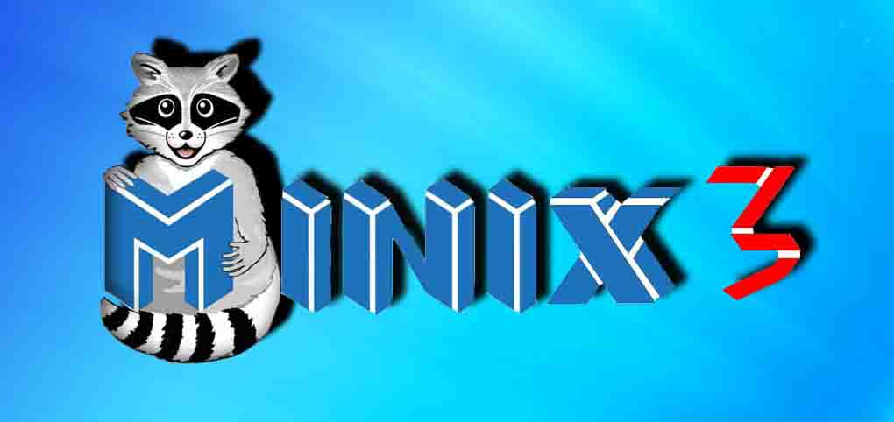

Операционная система Minix
 Маскот ОС Minix3Minix – свободная Unix-подобная ОС, созданная Эндрю Таненбаумом в 1987 году. Первая версия была создана в качестве наглядного примера для его учебника «Разработка и реализация операционных систем». Изначальной целью Minix было обучение студентов устройство ОС. Среди людей, на кого повиляла эта операционная система, был и Линус Торвальдс.
За первые 10 лет существования Minix претерпела большое количество изменений. Первоначальный вариант был рассчитан на компьютер IBM PC, который работал в базовой комплектации на UNIX V7. С течением времени система развивалась, и, что важно, не базировалась на 7 версии UNIX. Minix была перенесена на множество платформ, включая Macintosh, Amiga, Arari, SPARC.
После выхода UNIX V7, и началу продвижения ОС как коммерческого продукта компанией AT&T, многие учебные заведения были вынуждены исключить из своих учебных программ курсы, основанные на разборе исходных кодов UNIX. Чтобы исправить ситуацию, Эндрю Таненбаум решил создать собственную ОС, которая была бы совместима с UNIX, но оставалась совершенно самостоятельной. Так как в Minix не используется код компании AT&T, она не попадает под лицензионные ограничения и может свободно использоваться при обучении. Так студенты смогли снова изучать операционные системы на реальном примере. Название MINIX расшифровывается как mini-UNIX, так как Minix намного меньше своего прообраза.
Minix 1.0 была создана в 1987 году и состояла примерно из 12000 строчек исходного кода, написанного преимущественно на Си и на языке ассемблера. Исходный код ядра был опубликован в книге, которая вышла в том же самом году. Minix 1.5, выпущенный в 1991 году, начал поддерживать новые компьютерные платформы. Minix 2, выпущенный в 1997 году, была доступна для архитектур x86 и могла запускаться по ОС Solaris.
С точки зрения пользователя Minix 3 похож на UNIX, но намного меньше. Он содержит X Windows System и более 400 стандартных программ UNIX, позволяет программировать на cc, gcc, g++, bison, flex, perl, python, yacc. В настоящее время пользовательский интерфейс обеспечивает только Windows System, но со временем возможно добавление GUI (графического интерфейса пользователя), если такой найдётся. В отличии от традиционных ОС, где исходный код объединён в единую большую исполняемую программу, в ядре Minix 3 работает только примерно 4000 строк кода. Этот код обеспечивает диспетчеризацию и прерывание процессов. Оставшаяся часть ОС работает как процессы, запущенные в пространстве пользователя.
Хотя Minix и остаётся широко используемым инструментов по изучению устройства операционных систем в вузах, она вышла на новый этап развития, когда Таненбаум начал переделывать её в сверхнадёжную систему.
У Minix есть важное преимущество перед Unix. Более молодая ОС обладает модульной структурой. Например, файловая система Minix не является частью самого ядра операционной системы, а работает как отдельное пользовательское приложение. Другое же важное отличие заключается в целях создания ОС. UNIX создавался для того, чтобы быть эффективным, а Minix – чтобы быть легко понимаемым (так исходный код Minix содержит достаточно большое количество комментариев).